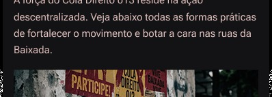

DA RUA PARA
AS REDES!
Agitação visual operária, colagem independente e contestação nas esquinas do litoral paulista. O lambe-lambe como trincheira da voz popular.
QUEM SOMOS
COLETIVO JUVENIL & INDEPENDENTESomos um coletivo jovem e independente da Baixada Santista, formado por pessoas que acreditam na força da participação política e da mobilização popular. Utilizamos o lambe-lambe e a comunicação visual para expressar nossas ideias, ocupar espaços públicos e aproximar a política do nosso cotidiano.
O QUE FAZEMOS
ARTE DE RUA, GRUDE E CONTESTAÇÃOCriamos, imprimimos e colamos cartazes com mensagens de conscientização, levando debates políticos às ruas de Santos, São Vicente, Cubatão, Praia Grande e outras cidades da região. Também registramos nossas ações e compartilhamos nossos materiais nas redes sociais, ampliando o alcance das nossas ideias.
POR QUE EXISTIMOS
CONTRA O APAGAMENTO DA NOSSA GENTEAcreditamos que a política não deve ficar restrita às instituições, aos partidos ou aos períodos eleitorais. Ela também acontece nas ruas, nas conversas e nas atitudes cotidianas. Existimos para ocupar os espaços públicos com ideias, estimular o pensamento crítico e mostrar que a juventude pode participar ativamente da construção do futuro.
PELO QUE LUTAMOS
BANDEIRAS E CAUSAS CENTRAIS- ★ DEMOCRACIA POPULAR: participação política, liberdade de expressão e defesa das instituições democráticas.
- ★ JUSTIÇA SOCIAL: combate à fome, à pobreza e às desigualdades que limitam oportunidades.
- ★ DIREITOS E DIGNIDADE: acesso à educação, à saúde, à moradia e a condições dignas de vida.
- ★ COMBATE AO PRECONCEITO: enfrentamento ao racismo, ao machismo, à LGBTfobia e a outras formas de discriminação.
- ★ JUVENTUDE ATIVA: valorização da participação dos jovens na política e nas decisões que afetam a sociedade.
- ★ SOLIDARIEDADE COLETIVA: construção de uma sociedade baseada no respeito, no cuidado e na união entre as pessoas.
MATERIAIS & MATRIZES DE RUA
Arquivos gráficos livres em alta resolução para download, impressão caseira e colagem popular.
Baixe os materiais e compartilhe suas ideias com responsabilidade. Antes de fixar qualquer cartaz ou adesivo, verifique cuidadosamente o local, as regras locais, a sinalização e se você tem autorização para isso.
Não cole em casas de outras pessoas nem em patrimônios particulares. Confira bem a superfície e o entorno antes de colar; não cubra placas, sinalizações, informações públicas ou obras de arte e não danifique espaços públicos ou privados. Use somente locais permitidos ou com autorização do responsável e respeite as normas da sua cidade.
KIT
AGITAÇÃO
COMPLETO
Todos os cartazes e adesivos enviados, reunidos em um pacote para facilitar o download.
▰ MATRIZES INDIVIDUAIS
35 ARQUIVOSAÇÕES & REGISTROS URBANOS
Galeria de cartazes e adesivos já fixados pelas cidades da Baixada Santista.
Registros documentais de intervenções já realizadas. Por segurança e autonomia coletiva, não divulgamos pontos exatos, endereços nem horários de colagem.
≋ FILTRAR TERRITÓRIO
7 REGISTROSVIU UM CARTAZ NA SUA CIDADE?
Vá até a aba Participe para enviar sua foto para o nosso e-mail e Instagram! O coletivo agradece cada intervenção compartilhada.
ENVIAR REGISTRO NA ABA PARTICIPE →COMO VOCÊ
PODE AJUDAR
A força do Cola Direito 013 reside na ação descentralizada. Veja abaixo todas as formas práticas de fortalecer o movimento e botar a cara nas ruas da Baixada.

MANDE FOTOS &
COMPARTILHE
#01COLOU NA SUA CIDADE?
Colou cartazes ou adesivos na sua rua, no ponto de ônibus ou na passarela? Compartilhe com a gente para fortalecermos a rede e documentarmos a ocupação dos muros da Baixada!
Fotografe apenas o cartaz, o adesivo ou o muro contextualizado. Não enquadre rostos de pessoas, tatuagens identificáveis, placas de veículos ou elementos que comprometam a segurança de quem colou.
✉ E-MAIL OFICIAL DIRETO
@ INSTAGRAM OFICIAL REDES
Marque nosso perfil ou envie os registros por mensagem direta (Direct).
ACESSAR @COLADIREITO013 NO INSTAGRAM ↗COMO SOMAR COM O MOVIMENTO
#02A força do Cola Direito 013 reside na ação descentralizada. Ninguém precisa pedir autorização para colar: basta ter coragem, material e vontade de transformar o cenário urbano.
BAIXE AS MATRIZES ABERTAS
Acesse a aba Materiais do aplicativo e faça download gratuito dos arquivos em alta resolução prontos para impressão em papel sulfite ou cartolina (A3/A4).
IR PARA ABA MATERIAIS →MONTE SEU BONDE NA QUEBRADA
Junte amigos do bairro, da escola ou do trabalho. Colar em dupla ou trio garante agilidade, observação atenta do tráfego e suporte mútuo nas madrugadas.
FAÇA GRUDE CASEIRO BARATO
Você não precisa de materiais caros: farinha de trigo, água morna e uma colher de vinagre formam a melhor cola do mundo. Use uma trincha simples ou garrafa PET furada.
REGISTRE & COMPARTILHE
Mande os registros fotográficos preservando as identidades. Ajude a multiplicar o alcance da mensagem pelas 9 cidades da Baixada Santista!
AJUDE A DIVULGAR NAS REDES
Não pode colar agora? Fortaleça o alcance digital: compartilhe as publicações do coletivo, reposte nos stories do Instagram e marque o perfil @coladireito013 nas suas postagens.